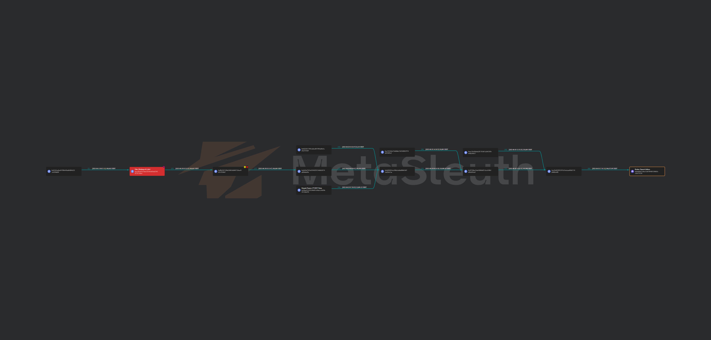

Investigation Dashboard
High-level summary of the theft event, laundering behavior, and final attribution outcome.
Executive Summary
On 13 June 2023, a total of 100,042 USDT was transferred from a victim wallet to a malicious address on the Ethereum network. From that point, the stolen funds were traced through multiple intermediary wallets and structured movements before reaching a centralized exchange cluster.
The investigation identified several key behaviors: rapid sequential transfers, a small test transaction before a main deposit, intermediate consolidation, and final routing into a wallet cluster consistent with centralized exchange operations. Based on transaction continuity, behavioral indicators, and clustering logic, the funds were attributed to Kraken.
The stolen funds were not bridged cross-chain and did not use a mixer protocol. Instead, they were layered through wallets before being routed to an exchange.
The case shows how layering, structuring, and consolidation can mimic obfuscation behavior even without Tornado Cash or bridge usage.
Methodology
The investigation used a forensic tracing approach focused on transaction continuity, behavioral analysis, and cluster-based attribution.
Transaction Flow Analysis
Funds were tracked step by step from the initial theft event through all subsequent wallets until the final exchange-linked destination.
Behavioral Pattern Analysis
Structuring, rapid transfers, test transaction behavior, and aggregation were examined to understand the laundering method.
Clustering & Attribution
Wallets were grouped based on transaction relationships and deposit behavior to identify centralized exchange characteristics.
Elimination Review
No interaction was observed with mixer protocols, bridges, or DeFi routing, strengthening the view that the objective was direct exchange cash-out.
Transaction Flow Analysis
The traced path shows a continuous movement from the victim wallet to the scammer wallet, through intermediary addresses, into consolidation points, and finally to a wallet cluster attributed to Kraken.
100,042 USDT left the victim wallet and moved to the initial malicious recipient.
Funds were quickly moved intact across intermediary wallets, indicating active laundering rather than holding.
A small validation transfer was made before the main amount, matching exchange deposit testing behavior.
Funds merged with other inflows in a wallet used for aggregation, a common exchange-side indicator.
The aggregated funds were transferred to a larger wallet consistent with centralized exchange deposit operations.
Although no mixer protocol was used, the layering and consolidation pattern demonstrates behavioral mixing before exchange cash-out.
Masked Transaction Evidence
Key transaction hashes and wallet addresses are presented in masked format for safe public portfolio sharing while preserving the investigative chain.
| Stage | Masked TXID / Hash | From | To | Amount / Notes |
|---|---|---|---|---|
| Initial Theft | 0x5a3940...bf307a |
0x045B3E...99D609 |
0xcc461B...17DBc6 |
100,042 USDT |
| First Transfer | TXID masked |
0xcc461B...17DBc6 |
0xF8B220...924bb7 |
Full amount transferred |
| Second Transfer | TXID masked |
0xF8B220...924bb7 |
0xD2d2Ef...masked |
Funds moved intact |
| Test Transaction | TXID masked |
0xD2d2Ef...masked |
0xfCf03F...masked |
10 USDT validation transfer |
| Main Transfer | TXID masked |
0xD2d2Ef...masked |
0xfCf03F...masked |
99,990 USDT main transfer |
| Consolidation | TXID masked |
0xfCf03F...masked |
0x39720b...masked |
Funds moved to aggregation path |
| Aggregation | TXID masked |
0x39720b...masked |
0xa29E96...masked |
Combined balance approx. 160,908 USDT |
| Final Exchange Routing | TXID masked |
0xa29E96...masked |
0x8E9D0D...731136 |
Total received approx. 364,073 USDT; attributed to Kraken cluster |
Note: Full identifiers are intentionally excluded from the public-facing report. The masked values preserve traceability for presentation without exposing complete transaction or wallet data.
Evidence & Analytical Findings
The case is supported by a strong evidentiary chain combining flow continuity, behavioral signals, and destination attribution.
Continuous Transaction Chain
Funds were followed from the theft event to the final destination without breaks, conversions, or cross-chain jumps.
Test Transaction Pattern
A small transfer occurred before the larger movement, which is consistent with destination validation prior to deposit.
Fund Consolidation
Multiple inflows were merged into a single wallet before the final exchange-bound transfer, strengthening the exchange attribution case.
No Mixer / No Bridge / No DeFi
The absence of protocol-based obfuscation supports the conclusion that the actor prioritized a fast path to centralized exchange deposit.
Because the asset remained USDT throughout and stayed on the same network, the continuity of evidence is especially strong.
The case produces a clear evidentiary chain that is suitable for compliance review, investigative reporting, and exchange attribution discussion.
Exchange Attribution Analysis
The final destination wallet displayed several characteristics consistent with centralized exchange-controlled infrastructure rather than a personal wallet.
The destination wallet handled large combined balances and inflows from multiple sources.
The transaction sequence and validation pattern aligned with exchange deposit workflows.
The wallet was not isolated; it was linked to a larger exchange-controlled pattern through transaction relationships.
Based on tracing, behavior, and clustering, the final destination was attributed to Kraken exchange infrastructure.
Risk Indicators
The following indicators are relevant from an AML, transaction monitoring, and fraud investigation perspective.
Theft Event
A large unauthorized transfer from a victim wallet marks the origin of the case.
Rapid Layering
Funds moved quickly across multiple wallets, indicating active laundering rather than passive storage.
Test Transaction Behavior
A small validation transfer was observed before the main movement, which is a known exchange deposit pattern.
Exchange Cash-Out Intent
The overall path strongly suggests the objective was to move the stolen funds into centralized exchange infrastructure.
Behavioral Mixing
Although no mixer protocol was used, layering, splitting, and consolidation created an obfuscation effect similar to behavioral mixing.
Strong Traceability
The absence of bridging or protocol-based anonymization preserved a strong evidentiary chain from source to destination.
Screenshots & Visual Analysis
The image below supports the tracing narrative by showing intermediary wallet movement, layering behavior, and final routing to an exchange-linked destination.

USDT Flow Reconstruction
Visual reconstruction of the theft path, intermediary wallet routing, consolidation behavior, and final exchange-linked destination.
Tools Used
Blockchain explorers were used for transaction validation, while visual flow analysis and clustering logic were used to understand destination behavior and exchange attribution.
Conclusion
The investigation confirms that 100,042 USDT was stolen and then routed through intermediary wallets using layering, structuring, and consolidation techniques before reaching a centralized exchange cluster.
This case does not rely on mixer protocols or bridge infrastructure. Instead, it demonstrates how behavioral mixing through wallet-to-wallet transfers can still be used to obscure origin before cash-out.
Analytical Conclusion
The continuous transaction chain, combined with structuring behavior, consolidation patterns, and cluster-based destination analysis, supports a strong attribution outcome. Final determination: the stolen funds were traced to Kraken exchange infrastructure.